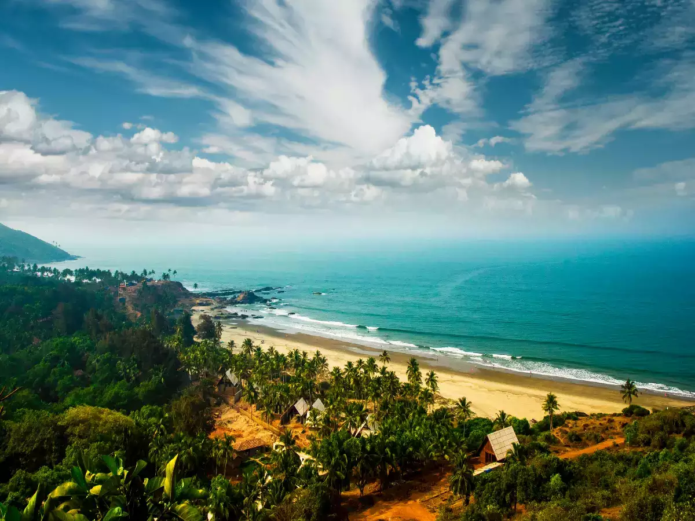
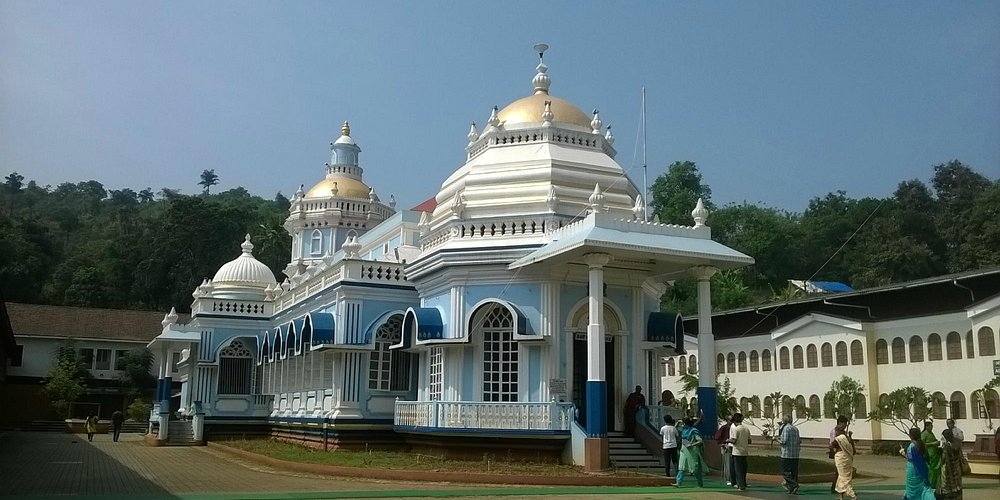
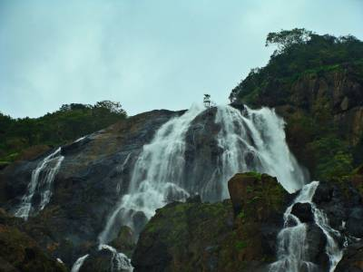
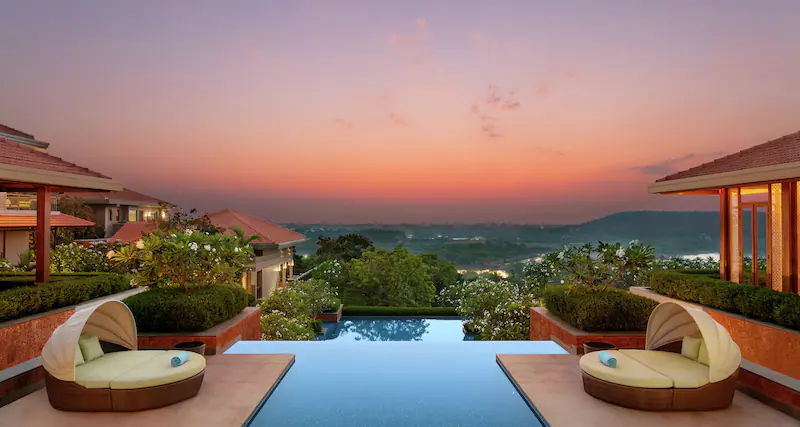
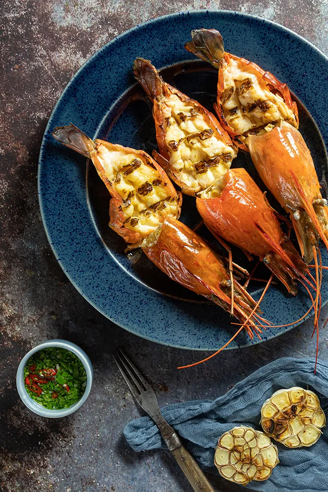

Asia > India > Goa
ABOUT GOA
East meets West in this sun-soaked state, where Indian
culture intertwines with Portuguese influences left over
from a 500-year occupation. The beaches have long served
as a magnet for serene hedonists. To the north, the
tourist-centric scene is prevalent, with an international
flair that is now skewing more hip than hippie. Travel
south for stretches of unspoiled sand and an escape from large
resorts. Temples, mosques and wildlife sanctuaries provide
diversions from the beach.
ESSENTIALS GOA

~ DO ~
places to see , ways to wander and
signature experience

~ STAY ~
a mixture of the charming , modern and
tried and true

~ EAT ~
can't miss spots to dine , drink
and feast